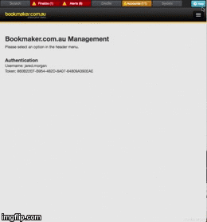

#!/bin/bash
if [ ! -d /docs/ ]; then
git clone ssh://git@gitlab:12345/docs/embedded-docs.git /docs/
fi
cd /docs/ && \
git pull && \
git reset --hard HEAD && \
rsync --delete-after -a /docs/build/ /var/www/docs/
sleep 300From Hackathon to Help System
The Original Idea
Field help and long form docs.
Provisioned using Open Source tooling.
Written in AsciiDoc.
Mapped to pages and fields with
.ymlor.json.Live rendered using
asciidoctor.json demand.
An Opportunity
Ladbrokes Hackathon.
Volunteered from a docs perspective.
Was offered an opportunity.
Product not designed for atomic content linking.
URL slugs not implemented for page element atomicity.
Fields not uniquely or consistently identified.
The Hackathon Solution
DragonForce an embedded help solution inside Manage.
Display rendered help content in a new tab when you click a Help Button.
You have two days.
MVP
Give users access to docs inside the product.
Do it using open source technology.
Make the content single source.
Make everything automatic.
Separate docs releases from code releases.
Technology
Asciidoctor source content.
Middleman Static Site Builder.
Franklin Static Site Framework.
GitLab on-premise hosted.
URL Matching
Help pages named the same as the PHP page to document.
index.php > index.adoc > index.html.Javascript button loaded files from a pre-set location in webroot.
Watcher script
update-newadmin-docs.shResides in the tools directory of the app webroot.
Watches for changes per the
sleepinterval.Sync html changes from Git to
/var/www/docs.
The Judging

Hackathon Quality
Not an engineering issue.
Links a bit fragile.
Totally my fault. :(
Concept Was a Winner!
Through the fire and the flames we carry on!
— Dragonforce
One of three winners chosen by the CTO.
$250 Prize.
HUGE boost in confidence!
What Now?
So we’ve made this proof of concept.
The Big Question
Can we get this solution released?
The Answer

Process
Documented hack in
README.adocto capture baseline state.Made an Epic with Stories and Tasks.
Employed Tech Writing skills to make solid Stories and Project Docs.
People
Worked with Hackathon engineer to hand over knowledge to dev team.
Worked iteratively with developers to "get it right".
Engineering
Used Deploy Keys instead of self-signed RSA.
Decreased sync task to once-a-day.
Help Button improved to visually show presence of help files.
Dev approved.
QA approved.
Released into the wild.
Hindsight
Things work OK.
Things can be improved.
Limitations
URL matching requires the exact filename.
Can’t use a nested file tree to group common files.
Changing destination html file requires changes to Help Button Javascript.
Missing help files cause Javascript browser errors in Developer environments.
Changing anything except content requires a code release and testing.
The Future
Realise the Hawkular dream of config driven docs.
Change tooling without impacting Help Button functionality.
Use NPM-based tooling to improve reliability.
Use GitLab Runners to better automate builds.
Set aside one day a week to write Embedded Help.
Take-aways
That developers are your allies and actually care about docs.
That DevOps get stuff done, and are worth having lunch with.
That being outside your comfort zone can sometimes be comfortable.
That you can be an entrepreneur inside your department.